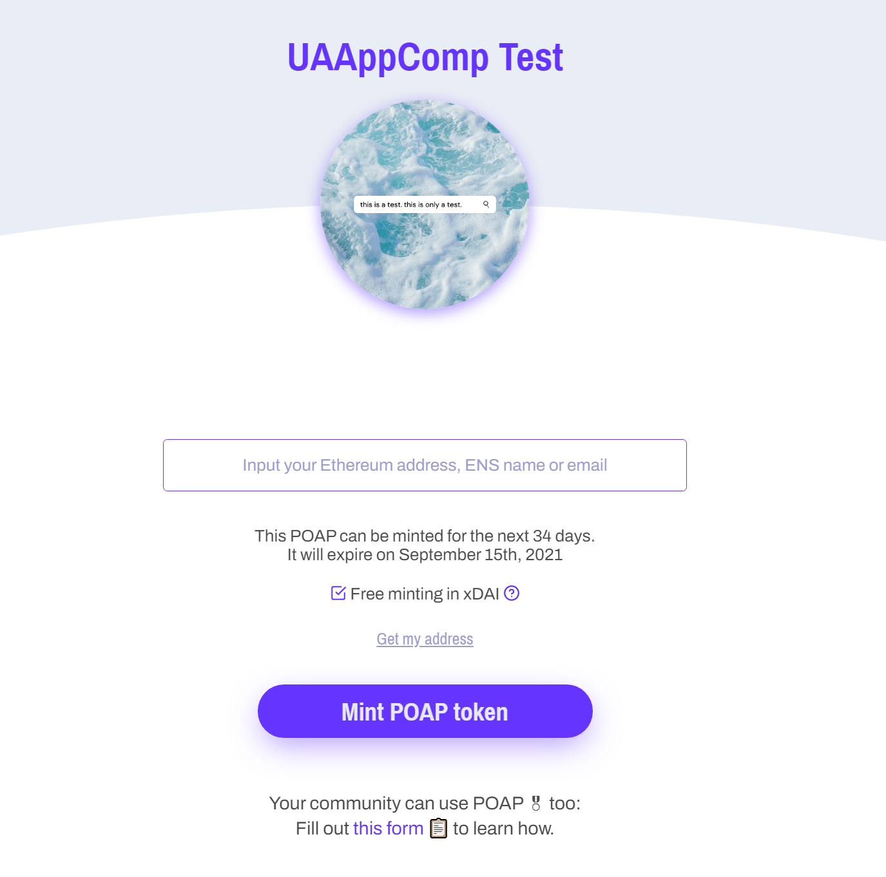

I’m strictly of the mindset that, when we talk about “virtual reality,” we need to expand our thinking beyond just headsets and floating signs. (This is one of the reasons I dubbed this lab the MA{VR}X Lab, to demonstrate that we should always consider all angles in tandem.) With the recent popularity of the metaverse concept (thanks, Zuck), a variety of issues crop up, not least of all being proof of identity and experience. Enter POAP.
Update 2022-10-12: much has changed in the POAP ecosystem since this article was initially published. The growth has been exponential and the quality standards and processes have increased and changed considerably. Great news, all around!
What is POAP?
Pronounced “PO-app” (like the po’ boy sandwich), POAP is an acronym for Proof Of Attendance Protocol. Check out the What is POAP: Explanation of the POAP ecosystem and components, and how they all fit together article for a fantastic rundown.
Essentially, it works like this:
- You’re planning an event or something similar. This could be a physical event or virtual. There are many use-cases, some of which are very creative.
- You create a POAP event for this, listing location, dates, how long POAPs can be minted (more on this soon), and a few other details.
- This generates codes that you provide to people that have somehow engaged with your event. (There are other ways to get POAPs to people. See the article linked above for more on this.)
- These codes give your participants POAPs that exist on the blockchain, where they can collect them as NFTs. (Think: permanent, portable badges.)
And that’s it! These are NFTs (non-fungible tokens) that folks can carry with them wherever they go. They are unique, they are immutable, and have at least personal value (though they are technically possible to sell but, even then, there’s a paper trail, as it were, on the blockchain of where it came from and who has had it), though having professional value is not unrealistic, as these can be awarded for professional development experiences just as much as concerts or art gallery openings.
For example, I made a UAAppComp “test” event just to give it a whirl. I received the links to the POAPs shortly after, and this is what it looks like for someone who was given a link (or scanned a QR code at your event):

At this point the attendee puts in their Ethereum address or email and, voila, they have a POAP!
Note: when you create or claim an NFT, this process is called “minting.” With POAPs, you can specific just when participants can do this. If you only wanted folks to be able to get their POAP during an event, sure, lock it down. If you want them to be able to mint that proof for a week after the event (or, say the event is a week long), knock yourself out. Don’t get too bogged down in the language.
Our first POAP
I’m currently working on creating the lab’s very first POAP (beyond the test run above). For those that have helped the lab get set up and running, provided support, or “got in on the ground floor,” as I like to think of it, there will be a special POAP just for them. As time goes on and we have more events either virtually or physically, more POAPs will become available.
Can you tell I’m excited?
When we actually start creating these and getting folks involved, I’ll probably do another post with a step-by-step on how to get them, even if you have no blockchain knowledge or experience. Watch this space!
Citation
@online{straight2021,
author = {Ryan Straight},
title = {Introducing {Proof} of {Attendance} {Protocol} {(POAP)}},
date = {2021-08-11},
langid = {en}
}